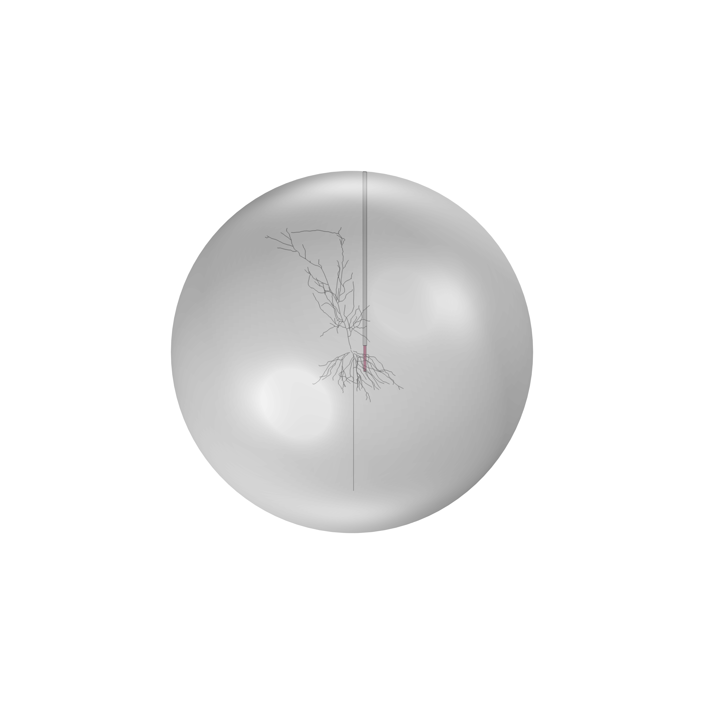
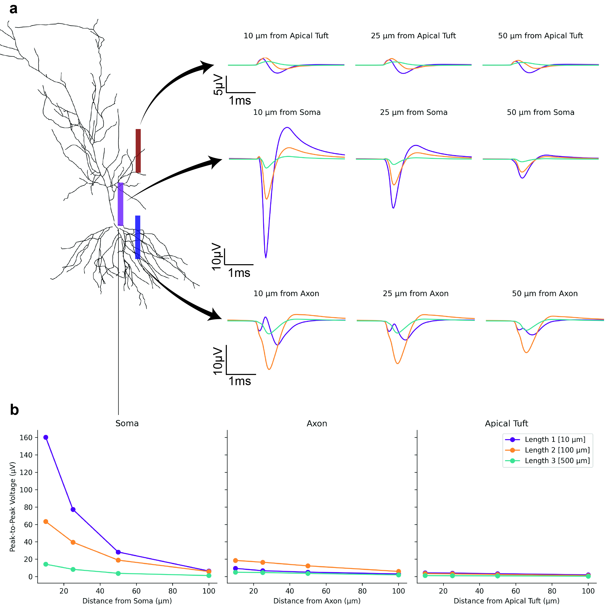

Simulating Neurons and Their Interactions with Electrodes in COMSOL
Overview
Selecting the right electrode geometry for intracortical recording typically requires costly and time-intensive animal experiments. This project develops a computational framework — combining NEURON-based neuron simulations with COMSOL finite element modelling — to predict how electrode size, shape, and placement affect extracellular action potential (EAP) recording quality. The models are among the first to characterise fully 3D cylindrical microwire geometries, which have been largely unexplored compared to planar probes.
Model Design
A biologically realistic CA1 pyramidal neuron morphology was simulated in NEURON (Python), with transmembrane currents extracted at each compartment and imported into COMSOL as a series of line-source current segments. The extracellular domain was modelled as a homogeneous grey matter sphere (conductivity 0.627 S/m), with a custom Randles circuit at the electrode boundary to capture electrochemical impedance effects. Three electrode types were compared: a standard single-shank planar probe (50 µm electrodes, 200 µm pitch), a high-density Neuropixels-style probe (6 µm electrodes, 15 µm pitch), and cylindrical platinum microwires (10 µm diameter) with exposed tip lengths of 10, 100, and 500 µm.

Key Findings
Electrode proximity to the soma is the dominant factor governing signal amplitude. The 10 µm exposed microwire at 10 µm from the soma yielded the highest peak-to-peak amplitude of any configuration tested — 160 µV — outperforming both the 50 µm planar electrode (139 µV) and the Neuropixels-style probe (101 µV). This advantage arises because the smaller wire diameter allows closer physical proximity to the neuron soma.
Increasing the microwire exposure length progressively attenuated signal amplitude through spatial averaging: a 100 µm exposure yielded 63 µV near the soma, while a 500 µm exposure produced only 14 µV — below the in vivo noise floor. Signals from all electrode types fell below ~15 µV beyond 50 µm from the soma, making reliable spike sorting impractical at greater distances. Model predictions were validated against benchtop saline experiments (Pearson r = 0.96).

Related Publications
- Jaylani R*, McConchie S*, Squires H, Goris T, Jung YJ, Higham S, Tong W, Quigley A, Ibbotson M, Garrett DJ, Prawer S, Cloherty S, Kapsa R, Ahnood A, De Leon SE. Modelling of intracortical microwire electrodes for brain-machine interfaces. Manuscript in preparation. github.com/sodeve19/NEURON_in_COMSOL
Collaborators
RMIT University — Biomedical Engineering · The University of Melbourne — School of Physics